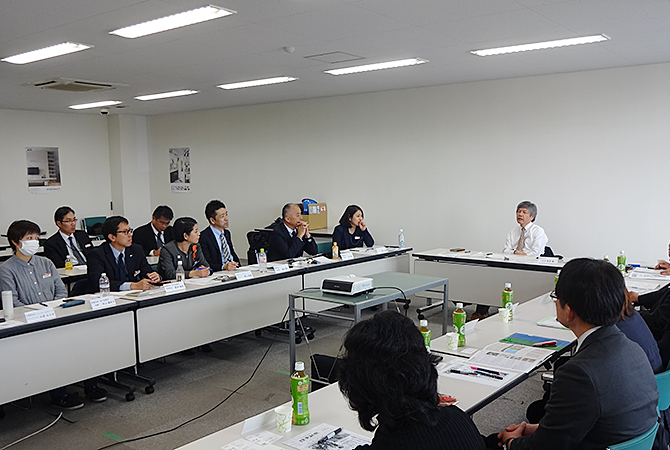

LIXILグループの工場、営業拠点、店舗では、地域住民の皆さまと従業員が対話する「コミュニティ・ダイアログ」を開催しています。まずはお互いを知り、商品・サービス、環境、防災、学校・教育、交通、自治会関係など幅広い分野で地域の課題について意見交換し、LIXILが持続的に貢献できることを見出していきます。
2016年度は、工場1拠点、営業6拠点、LIXILビバ4店舗でコミュニティ・ダイアログを実施しました。地域で活躍するさまざまなステークホルダーの方々に参加いただき、協働や交流、地域貢献について意見交換をしています。開催後はそれぞれの拠点が、それぞれのやり方で様々な活動に取り組んでいます。
茨城支店で行った対話概要を紹介します。
2006年に開設した水戸ショールーム。近隣の営業所も水戸市元吉田町に所在していますが、地域に親しまれるショールームを目指して、2017年2月にコミュニティ・ダイアログを開催しました。
吉田地区自治実践会の会長さんをはじめ、小学校の教頭先生など、様々な立場で活動されている皆さまと意見交換しました。
| 日時 | 2017年2月23日 |
|---|---|
| 開催場所 | LIXIL北関東支社 茨城支店（水戸営業所・水戸ショールーム） |
| 社外ステークホルダー |
吉田地区自治実践会 6名(会長1名、副会長3名を含む) NPO法人茨城県防災士会 理事 水戸市立吉田小学校 PTA副会長 水戸市立吉田小学校 教頭 水戸市社会福祉協議会 支部長 茨城県立水戸特別支援学校 進路指導主事 |
| 株式会社LIXILからの参加者 | 北方 寛（北関東支社 支社長） 福田 隆一（茨城支店 支店長） 冨田 裕紀（水戸営業所 所長） 髙橋 優（水戸営業所 係長） 松山 麻紀子（水戸営業所） 磯野 拓也（水戸営業所 住宅市場課） 吉田 淳子（水戸営業所 キャンバサー） 稲見 真樹（水戸ショールーム マネージャー） 照山 瑞貴（水戸ショールーム チーフコーディネーター） 山本 みさ子（北関東支社 ショールームグループ グループリーダー） 畠山 彩（広報部 主査） |
| ダイアログでの話題 | 地域行事などLIXILが地域の一員として協力できることについて |
※所属・役職名は、ダイアログ開催当時の名称です。
このエリアは少子高齢化が進み、自治会の加入率も年々低下しています。そんな中でLIXILさんが「地域に貢献したい」と声をかけてくれました。当初は驚きましたが、このように企業も一体となって交流できることは嬉しいです。お祭りや防災訓練など、地域の行事にぜひ参加していただきたい。また、今回のことを先進事例として、他の企業へも呼びかけたいと思います。
近隣には幼稚園があり小学校も多数ありますが、通学時の交通の安全面など、子どもたちは地域に見守られています。例えばLIXILさんには子どもたちに何かあったときにショールームに駆け込めるよう、ご協力いただけることがあるとありがたいです。そのためにも、子どもたちには徐々にLIXILさんを知ってもらうことが大切だと思います。小学校への出前授業などを実施していただきたいですね。
特別支援学校では、LIXILさんと以前からご縁があり、子どもたちの送り迎えの集合場所のひとつがこのショールームとなっています。7割近い生徒が車椅子ですが、今後はショールームを休憩で使わせていただいたり、職場体験を通して、就職前に体験する機会もいただけるとありがたいです。
地域の皆さんからお話を伺って、望まれているのは今回の一度きりではなく、LIXILの責任者が変わっても、継続的にお話ができてご協力ができることが一番ではと感じました。社内で認識を合わせてお応えしていきたいと思っています。
また、ショールームが入りにくいと感じられるという意見もありましたが、皆さんに親しみをもってもらえるショールームを目指して参ります。